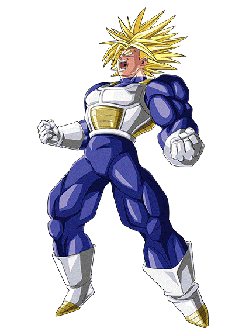
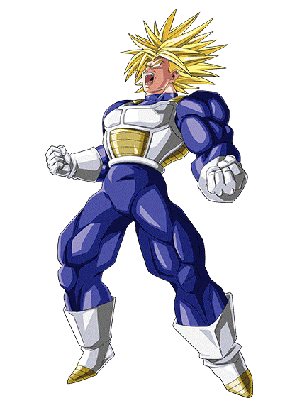

Trunks (トランクス, Torankusu), también conocido como Trunk en el doblaje al español de España, es un mestizo entre humano terrícola y Saiyan nacido en la Tierra, e hijo de Bulma y Vegeta, el cual es introducido en el Arco de los Androides y Cell. Más tarde en su vida como joven, se termina convirtiendo en un luchador de artes marciales, el mejor amigo de Son Goten y en el hermano mayor de su hermana Bra.